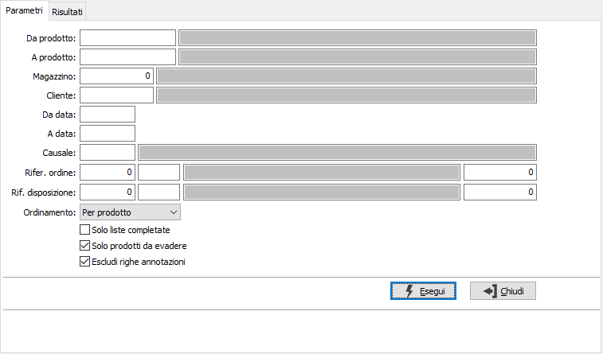
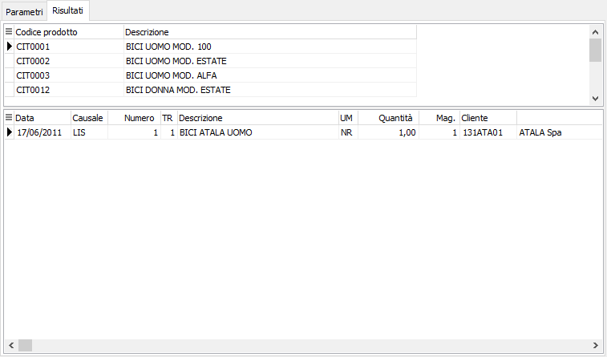

Analisi liste di prelievo
Il programma effettua la visualizzazione delle liste di prelievo esistenti in archivio in base ai parametri inseriti dall’utente.
E’ possibile visualizzare le liste relative ad una tipologia omogenea di causali, e/o ad uno o più clienti, e/o ad uno o più prodotti, e/o relative ad uno specifico magazzino, oppure relative ad un determinato ordine o disposizione, entro limiti di data specificati.
E’ possibile selezionare solo liste complete, solo prodotti da evadere ed escludere dall'analisi le righe di annotazione eventualmente presenti nelle liste.
Il programma si articola su due finestre video. La prima, Parametri, consente la definizione dei parametri di analisi.

DA PRODOTTO: eventuale codice dell'articolo, presente in anagrafica prodotti, da cui si desidera iniziare la selezione di analisi. Confermando a vuoto, la selezione inizia con il primo prodotto valido. Sul campo sono attive le funzioni di ricerca (F9).
A PRODOTTO: eventuale codice dell'articolo, presente in anagrafica prodotti, a cui si desidera terminare la selezione di analisi. Confermando a vuoto, la selezione termina con l’ultimo prodotto valido. Sul campo sono attive le funzioni di ricerca (F9).
MAGAZZINO: eventuale codice del magazzino a cui si vuole limitare la selezione di analisi. Sul campo sono attive le funzioni di ricerca (F9) sulla tabella omonima.
CLIENTE: eventuale codice del cliente, presente in anagrafica clienti, per cui si vuole limitare la selezione di analisi. Sul campo sono attive le funzioni di ricerca (F9).
DA DATA: eventuale data del documento da cui deve iniziare l’analisi dei documenti relativamente ai precedenti parametri di selezione. Confermando a vuoto, l’analisi inizia con il primo documento valido.
A DATA: eventuale data del documento con cui si desidera terminare l’analisi dei documenti relativamente ai precedenti parametri di selezione. Confermando a vuoto, l’analisi si conclude con l'ultimo documento valido.
CAUSALE: eventuale codice della causale liste di prelievo a cui si vuole limitare la selezione di analisi. Sul campo sono attive le funzioni di ricerca (F9) sulla tabella omonima.
RIF. ORDINE: tre campi per contenere rispettivamente anno, causale e numero dell'ordine cliente per cui si vuole limitare la selezione.
RIF. DISPOSIZIONE: tre campi per contenere rispettivamente anno, causale e numero della disposizione per cui si vuole limitare la selezione.
ORDINAMENTO: combo box per definire i criteri di ordinamento. Valori ammessi: per prodotto, per cliente o per riferimento ordine.
SOLO LISTE COMPLETATE: definisce se analizzare solo le liste di prelievo che sono state definite complete (casella con segno di spunta) oppure analizzare tutte liste (casella vuota).
SOLO PRODOTTI DA EVADERE: definisce se analizzare solo le righe prodotto che hanno già generato documento di spedizione (casella con segno di spunta) oppure analizzare tutte liste (casella vuota).
ESCLUDI RIGHE ANNOTAZIONI: definisce se escludere dall'analisi le righe di tipo annotazione (casella con segno di spunta) oppure analizzarle (casella vuota).
Confermando tramite pressione del bottone Esegui, viene avviata la selezione e richiamata la finestra video Risultati.

La finestra video è articolata su due sezioni: la sezione superiore elenca i prodotti, i clienti oppure i riferimenti ordine selezionati in base al tipo di ordinamento scelto.
La sezione inferiore elenca invece i movimenti relativi al rigo selezionato della sezione superiore, che è quello contrassegnato dalla freccia a sinistra del rigo.
Tramite la pressione del bottone Stampa oppure Anteprima della toolbar è possibile eseguire la stampa del risultato in forma di report.